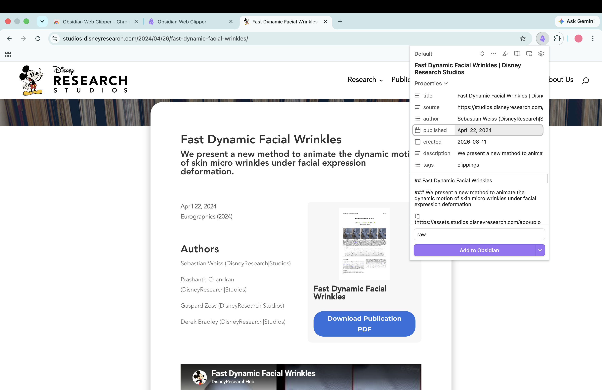
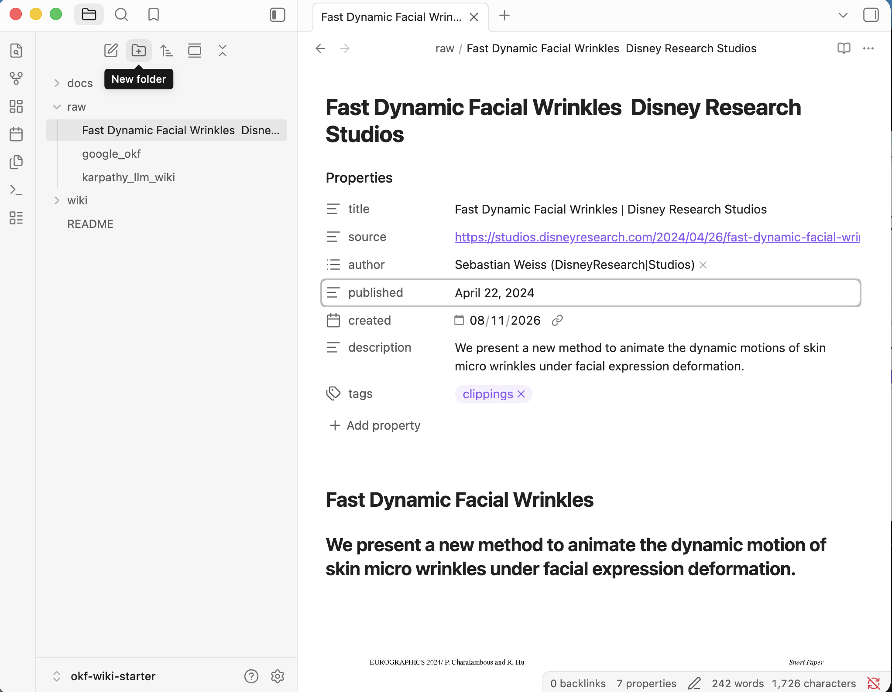
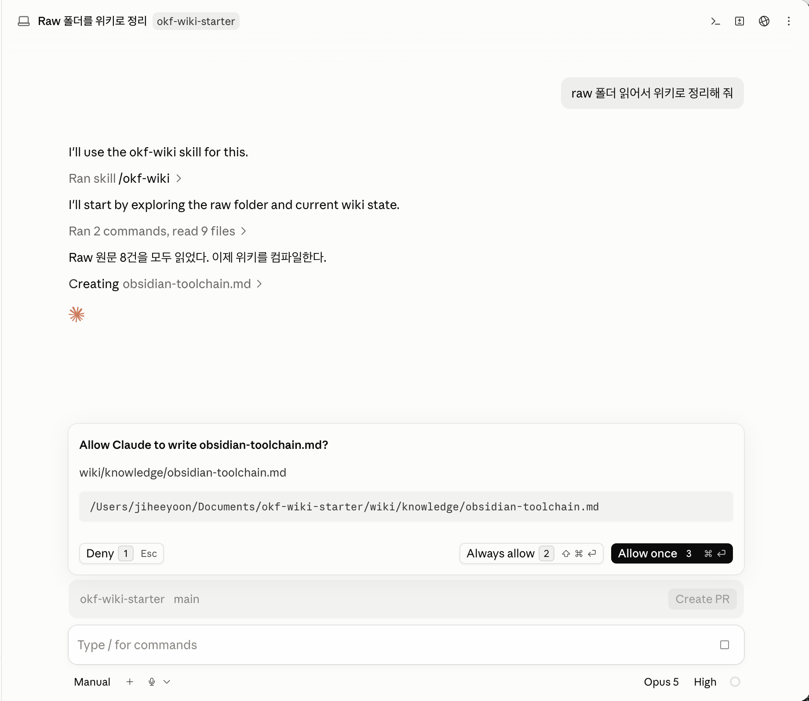
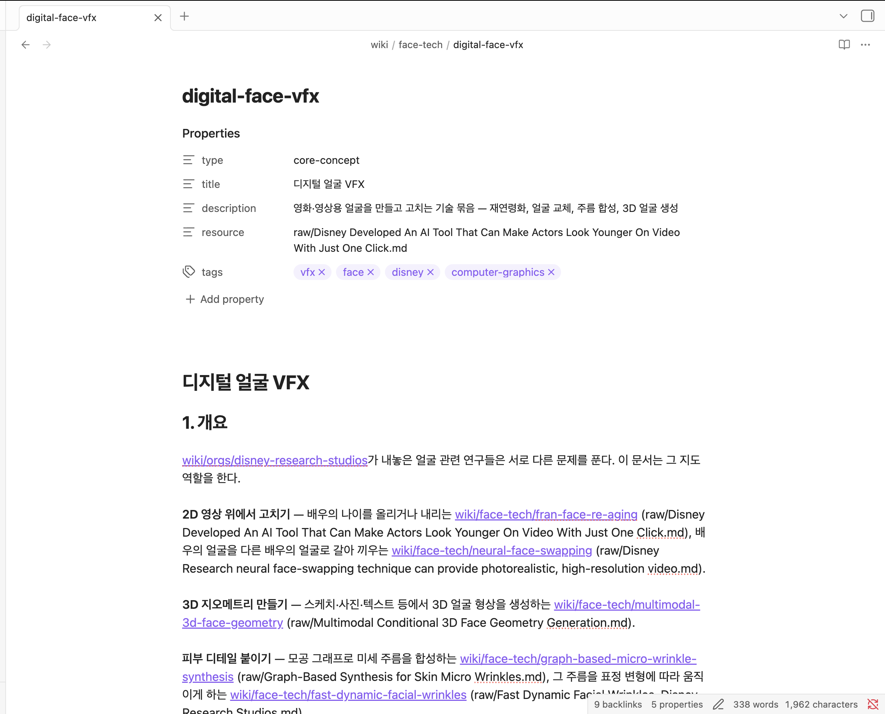
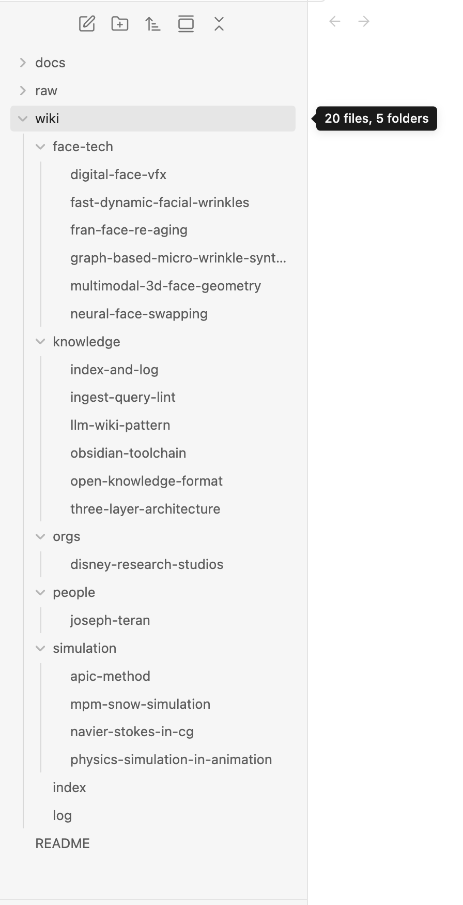
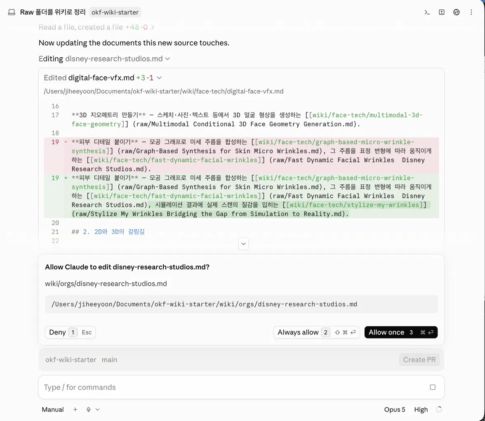
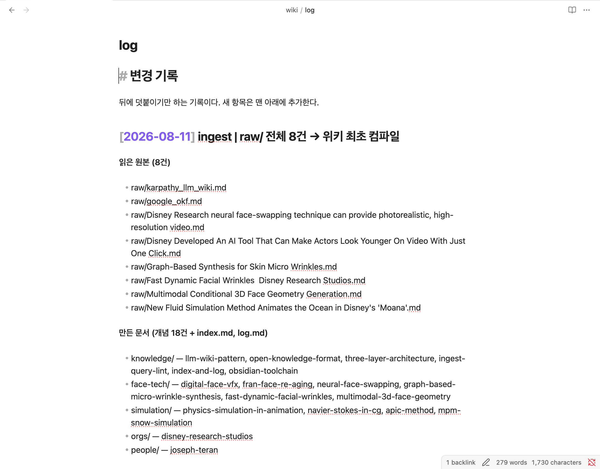

3-1 · 1:40 – 2:10 · 30분
③ 내 문서로 지식 관리
에이전트 시작하기
관심 자료 쌓기
3-1 · 1:40 – 2:10 · 30분
이런 걸 배워요
- AI가 여러 자료를 요약하고, 겹치는 내용을 합치고, 개념끼리 잇는 원리
이런 걸 해봐요
- 웹 클리퍼로 관심 자료 2~3개를 폴더에 넣기
→ 'raw 폴더 읽어서 위키로 정리해 줘'
→ wiki/에 개념문서 생성
- 자료 하나 더 추가하고 다시 실행
→ 새 문서 대신 기존 문서에 한 줄 늘어나는 것 확인
핵심 내용
관심 자료 쌓기
참고
관심있는 주제가 없으면 예시 주제들 중에 선택할 수 있게 합니다.
준비
실습 주제를 고릅니다
한 주제에 대해 서로 다른 글 두세 개면 충분합니다. 겹치는 내용이 있어야 합쳐지는 과정을 볼 수 있습니다.
전공 · 이공
- 트랜스포머와 어텐션
- 확산 모델과 이미지 생성
- 2차전지 양극재 소재
- 반도체 미세 공정
- 유전자가위 치료제
전공 · 인문사회
- 행동경제학의 넛지
- 플랫폼 기업의 수익 구조
- 저출생 대응 정책 비교
- 개인정보보호법과 AI 규제
- 도시 재생과 젠트리피케이션
진로 · 학업
- 가고 싶은 회사의 채용 공고와 기술 블로그
- 직무별 인턴 후기 모음
- 대학원 진학 준비 과정
- 교환학생 지원 절차
- 공모전·학회 준비 자료
관심사
- 러닝 훈련 루틴
- 자취 요리 레시피
- 카메라 렌즈 비교
- 커피 원두와 추출 방식
- 여행 도시별 정보
취미 · 문화
- 좋아하는 감독의 작품 세계
- 축구 전술 흐름
- 보드게임 룰과 전략
- 식물 키우기
고를 때 기준
- 서로 겹치는 글이 있는 주제
- 앞으로도 계속 찾아볼 주제
- 용어가 여러 개 나오는 주제
- 한 페이지로는 안 끝나는 주제
1단계
웹 클리퍼로 자료 담기


- 관심 있는 글을 브라우저로 엽니다
기사, 블로그 글, 위키백과 항목.
- 웹 클리퍼 아이콘을 누릅니다
본문만 뽑혀(클리핑) 마크다운으로 raw/ 에 저장됩니다.
- 두세 개를 담습니다
파일을 못 찾으면 웹 클리퍼 설정의 저장 위치가 raw 인지 확인합니다.
raw/ 에는 예제 두 개가 있어, 자료를 못 담아도 실습은 진행됩니다.
클리핑웹페이지에서 광고나 메뉴를 뺀 본문만 뽑아 내 폴더에 저장하는 것.
2단계
정리를 실행합니다

Code 탭 아래 입력창에 이렇게 넣습니다.
이렇게 부탁합니다
raw 폴더 읽어서 위키로 정리해 줘
자료를 읽어 개념을 뽑고, 겹치는 내용을 합치고, 파일로 나눠 링크를 걸고, 목차를 갱신합니다. 1~3분 걸리는 동안 Obsidian 그래프를 옆에 띄워 둡니다.
파일을 만들어도 되냐고 물으면 승인합니다. 승인 전에는 아무것도 바뀌지 않습니다.
3단계
만들어진 문서를 확인합니다


Obsidian에서 새로 생긴 문서를 하나 엽니다. 앞에서 본 세 가지가 들어 있습니다.
맨 앞
표식
type: 이 붙어 있어야 합니다. 이게 없으면 규격 위반입니다.
문단 끝
출처
(raw/...) 형태로 어느 자료에서 나온 이야기인지 표시돼 있습니다.
아래쪽
연결
wiki/... 로 다른 개념과 이어져 있습니다. 이게 그래프의 선입니다.
출처를 눌러 원문까지 확인합니다. AI가 지어낸 문장을 걸러 내는 가장 확실한 방법입니다.
4단계 · 오늘의 핵심 장면
자료를 하나 더 넣고 다시 돌립니다
같은 주제의 글을 하나 더 담고 정리를 다시 실행합니다. 새 문서가 여러 개 생길 것 같지만 결과는 다릅니다.

자료가 쌓일수록 문서 수가 아니라 문서의 밀도가 올라갑니다. 이것이 복리의 실체입니다.
변경 적용파일을 고치기 전에 "어디가 어떻게 바뀌는지"를 먼저 보여 주고 승인을 받는 화면. 초록색은 새로 추가되는 줄, 빨간색은 지워지는 줄입니다. diff
확인
여기까지 확인합니다

- wiki/ 폴더에 개념 문서가 세 개 이상 생겼다
- 문서 맨 앞에 type 표식이 있다
- 문단 끝에 (raw/...) 출처가 붙어 있다
- Obsidian 그래프에 점과 선이 보인다
- 자료를 추가하고 다시 돌렸을 때 기존 문서에 줄이 늘어나는 것을 확인했다